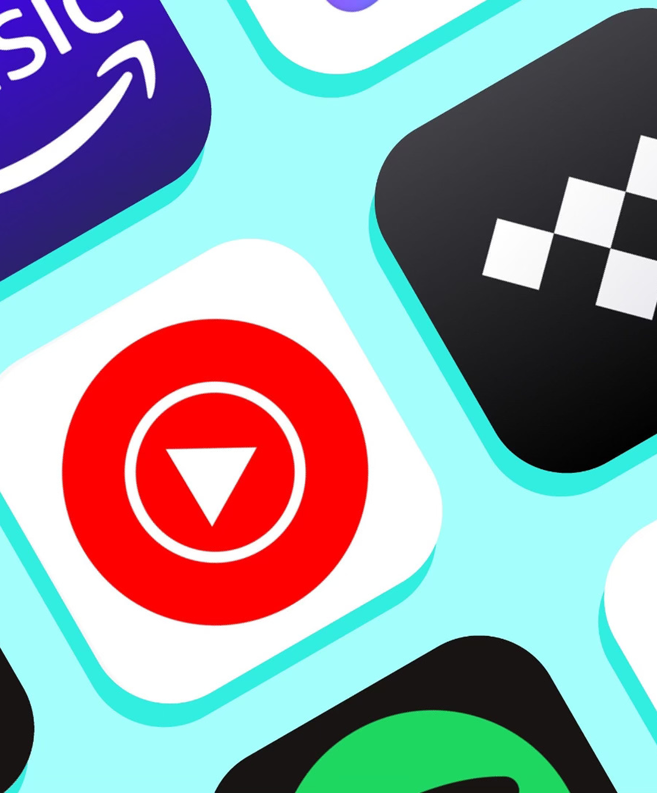
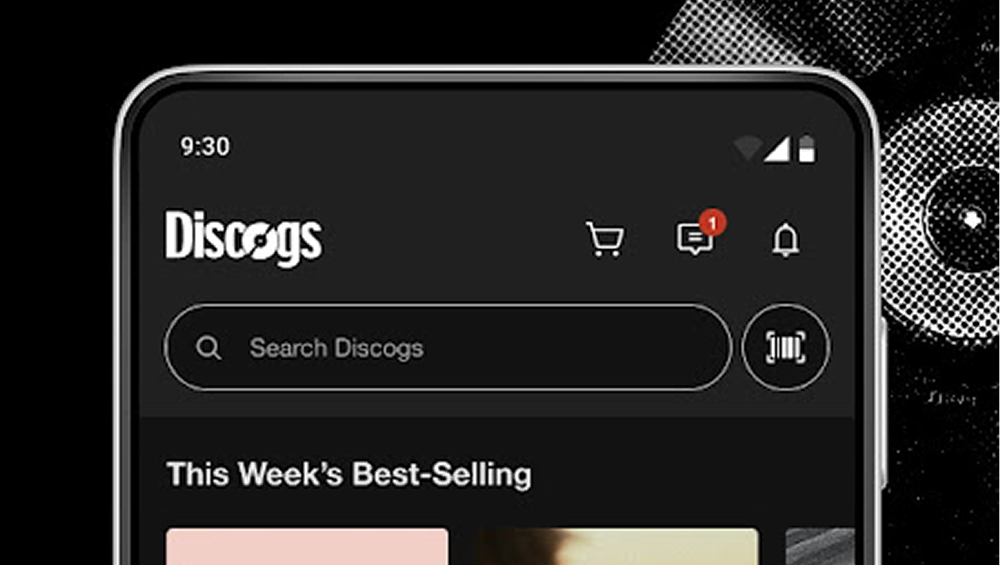
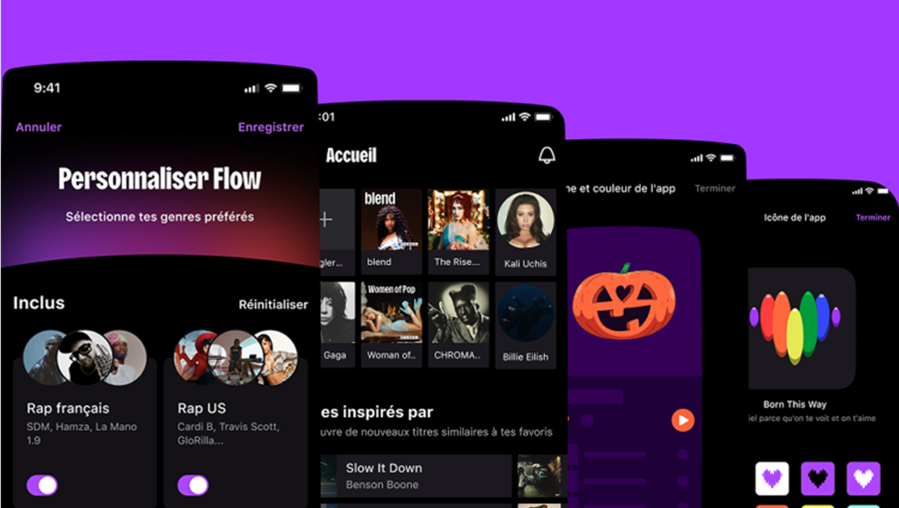
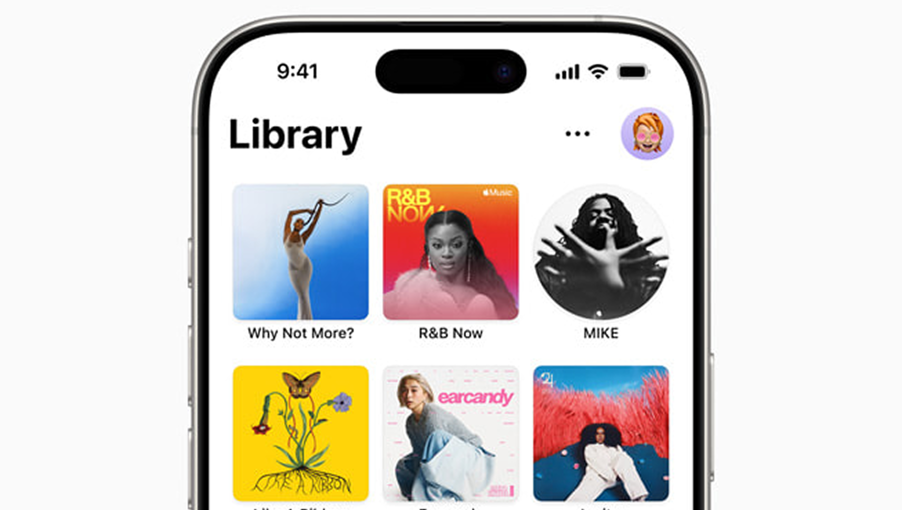

Recommandations
musicales
Repenser la découverte musicale pour passer d'une écoute algorithmique et passive à une expérience choisie et rituelle.

Un paradoxe au cœur du streaming
En tant qu'utilisateur quotidien de plateformes de streaming, j'ai constaté un paradoxe : plus le catalogue est vaste, moins l'écoute semble intentionnelle. Les algorithmes recommandent, l'utilisateur suit. La musique devient un flux de fond plutôt qu'une expérience choisie.
La recommandation musicale est un enjeu UX profond qui mêle technique et usages. C'est un sujet que je voulais explorer dans le cadre de mon projet bachelor, et l'occasion de me plonger dans l'industrie musicale, un milieu que je ne connaissais pas encore en profondeur.

D'une question large à un angle précis
Trois constats ont guidé la première formulation. Le choix quasi illimité de musiques perd l'utilisateur et laisse les algorithmes décider à sa place. L'industrie musicale fonctionne sur les revenus qu'elle génère et non sur la qualité de ce qu'elle propose. Et l'écoute de la musique est devenue une activité passive et individualisée.
Comment transformer nos recommandations algorithmiques et publicitaires de musique en une expérience humaine et sociale ?
Après une phase de recherche approfondie, la problématique a évolué vers un angle plus centré sur l'auditeur lui-même.
Comment l'auditeur peut reconsidérer la musique en passant d'une écoute musicale suggérée et virale à une écoute de la musique rituelle et réfléchie ?
Quatre tensions à dénouer
L'accessibilité dévalorise
D'immenses catalogues sont disponibles par abonnement. Cette accessibilité totale change la valeur que l'on accorde à ce que l'on écoute.
La mode éphémère
La musique devient un vecteur de modes éphémères qui se propagent rapidement, sans qu'elle soit nécessairement considérée comme un art.
Le retour au tangible
L'augmentation des achats de vinyle par les nouvelles générations est le signe d'un besoin de rendre l'écoute plus tangible et intentionnelle.
La bulle acoustique
Le paradoxe du choix mène à une écoute passive. L'individualisation au casque fragilise la transmission familiale et crée une bulle solitaire.
Une démarche en quatre étapes
Veille stratégique
Veille sur quatre axes pour cadrer le sujet. Sur le plan sociologique : individualisation de l'écoute, paradoxe du choix, néo-tribus (Phonk, K-Pop, Funk). Sur le plan économique : marché de 29,6 Md$ dominé à 69 % par le streaming, Spotify à 640 M d'utilisateurs. Sur le plan technologique : IA (10 000 titres générés par jour sur Deezer), TikTok moteur de découverte pour 68 % de la Gen Z. Sur le plan juridique : opposition "Market Centric" / "Artist-Centric", streams frauduleux estimés entre 10 et 30 %.




Terrain : 7 interviews
Entretiens qualitatifs auprès d'utilisateurs Millennials et Gen Z sur leurs habitudes d'écoute. Frustrations récurrentes : le sentiment d'écouter toujours les mêmes musiques, l'impossibilité d'ajuster les suggestions sur Spotify, le rejet de la musique générée par IA, la nostalgie pour l'expérience physique du vinyle.
Personas et cibles
Deux profils cibles ont émergé. La Gen Z (15–25 ans), qui a besoin d'ancrer son écoute dans la physicalité alors qu'elle n'a connu qu'un monde numérique. Et les Millennials (28–42 ans), qui ont vécu le passage au numérique et veulent retrouver une expérience de leur jeunesse, loin du tout-digital.


Idéation et axes de concept
Méthode SCAMPER pour structurer l'idéation : substituer l'algorithme imposé par des choix utilisateurs, adapter les suggestions aux volontés des utilisateurs, éliminer les recommandations commerciales. Trois axes ont émergé.
Lien numérique / physique
Retrouver son activité physique (collection, achats) sur sa plateforme digitale. Référence : Discogs.
Friction physique dans le numérique
Interface et animations poussées qui simulent la résistance de l'objet physique.
Recommandations transparentes et ajustables
Permettre de créer une expérience personnalisée dans une plateforme existante : c'est l'axe retenu.



Choisir le fonctionnement de ses recommandations
L'axe retenu, « choisir le fonctionnement de ses recommandations », combine la meilleure faisabilité et le plus fort impact selon la matrice de classification réalisée. L'idée : rendre les recommandations transparentes et permettre à l'utilisateur d'ajuster son expérience selon ses envies et dans le temps, plutôt que de subir un algorithme opaque piloté par des logiques commerciales.
Le modèle économique repose sur un abonnement sans publicité et sans boost commercial des artistes dans l'application. La phase de recherche est achevée. La conception du produit est la prochaine étape.

Ce que ce projet m'a enseigné
- Mener une veille à 360° (sociologique, économique, technologique, juridique, concurrentielle) permet de poser un cadre solide avant toute phase de design. C'est ce travail de fond qui a permis de reformuler la problématique et de passer d'une question large à un angle précis et actionnable.
- Les interviews terrain sont irremplaçables pour confronter les hypothèses issues de la veille à la réalité des usages. Les verbatims récoltés auprès des 7 utilisateurs ont directement nourri les axes de concept.
- Structurer l'idéation avec des méthodes comme le SCAMPER permet de dépasser les premières idées évidentes et de faire émerger des concepts plus différenciants, évalués ensuite sur des critères objectifs de faisabilité et d'impact.